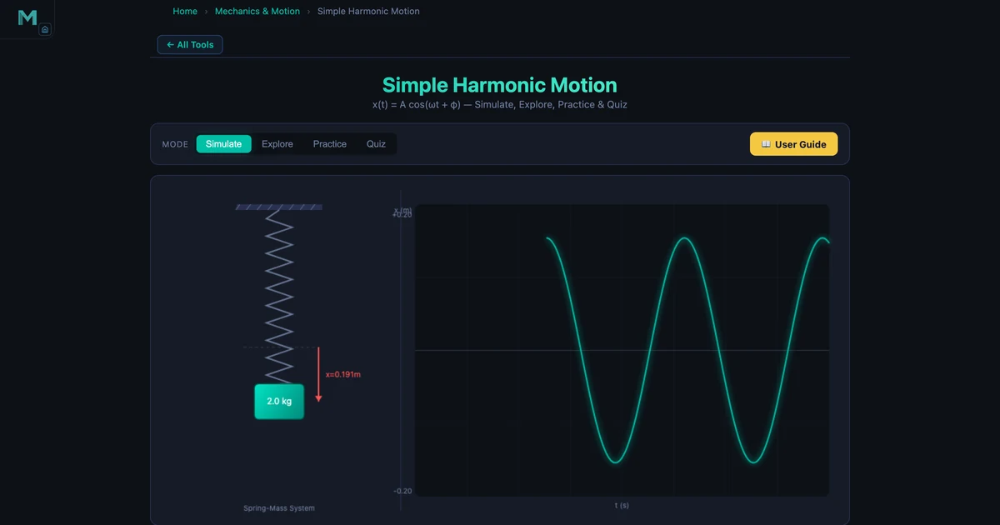
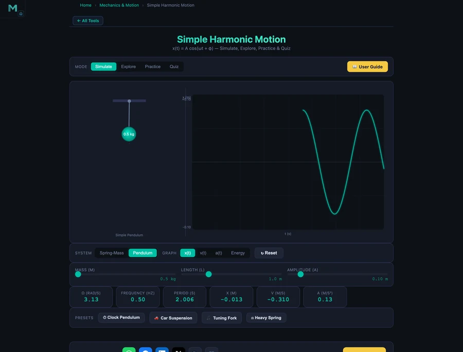

Simple Harmonic Motion Simulator: Visualise Period, Frequency and Energy of Oscillations

- Simple harmonic motion is oscillation in which acceleration is proportional to displacement and directed toward equilibrium: a = −ω²x.
- The period is T = 2π/ω, where ω = √(k/m) for a spring-mass system and ω = √(g/L) for a pendulum; pendulum period is independent of mass.
- Total mechanical energy is constant at E = ½kA², maximum velocity v_max = Aω occurs at equilibrium, and maximum acceleration a_max = Aω² occurs at the extremes.
Simple harmonic motion is the heartbeat of mechanical engineering. It shows up in suspension springs, engine valve timing, structural vibrations, and pendulum clocks — and students get it wrong on exams with remarkable consistency. Not because the formula is hard. The formula is straightforward. They get it wrong because they never watched the motion happen while changing the parameters. The NHIT VisualLab SHM tool fixes that. Set a spring constant, drag an amplitude slider, and watch the period number update before you've lifted your finger.
Why SHM Trips Students Up
Here's a scene that repeats every semester without fail. The first SHM problem is a simple spring: find the period. The student writes T = 2π√(m/k), substitutes correctly, and gets the right number. Great. Then the second problem doubles the spring constant. Half the class guesses that the period doubles. A quarter guesses it halves. Only a few actually compute √(k/m) again and notice the relationship is nonlinear — the period changes by √2, not by 2.
The square root is the culprit. You can explain it verbally a hundred times. But drag the spring constant slider from 50 N/m to 200 N/m and watch the period drop from 1.257 s to 0.628 s — exactly half — and the square root relationship clicks permanently. That's the experience a static textbook cannot offer.
Another consistent mistake: students believe the mass is what drives the oscillation speed. Heavier means slower, they reason. True enough for a spring-mass system (ω = √(k/m), so mass appears in the denominator). But then they transfer the same reasoning to a pendulum, where mass disappears entirely from the period formula. Two systems, same-looking oscillation, completely different dependencies. The simulator lets you confirm that in about 15 seconds by switching the system tab.
The SHM Formula Set
Let's anchor the mathematics before exploring the simulator. The defining condition of simple harmonic motion is that the restoring force is proportional to displacement and acts toward the equilibrium:
\[F = -kx\]
For a spring-mass system, this directly gives the equation of motion, whose solution is a sinusoidal displacement:
\[x(t) = A \cos(\omega t + \varphi)\]
where \(A\) is amplitude (m), \(\omega\) is angular frequency (rad/s), and \(\varphi\) is the initial phase (rad). The angular frequency for each system is:
\[\omega_{\text{spring}} = \sqrt{\dfrac{k}{m}} \qquad \omega_{\text{pendulum}} = \sqrt{\dfrac{g}{L}}\]
Period, frequency, and angular frequency are three faces of the same quantity:
\[T = \dfrac{2\pi}{\omega} \qquad f = \dfrac{1}{T} = \dfrac{\omega}{2\pi}\]
Velocity and acceleration follow from differentiating displacement. They lead displacement by 90° and 180° respectively:
\[v(t) = -A\omega\sin(\omega t) \qquad a(t) = -A\omega^2\cos(\omega t) = -\omega^2 x(t)\]
The last expression — \(a = -\omega^2 x\) — is the most important. Acceleration proportional to displacement, opposite sign, is the definition of SHM. Maximum velocity is \(v_{\max} = A\omega\), occurring at the equilibrium; maximum acceleration is \(a_{\max} = A\omega^2\), at the extremes.
Spring-Mass System in the Simulator
Default State: m = 2 kg, k = 50 N/m
The default configuration is a 2 kg mass on a 50 N/m spring, released from 0.2 m. The simulator reports ω = 5.00 rad/s, f = 0.80 Hz, T = 1.257 s. Let's verify:
\[\omega = \sqrt{\dfrac{k}{m}} = \sqrt{\dfrac{50}{2}} = \sqrt{25} = 5.00 \text{ rad/s}\]
\[T = \dfrac{2\pi}{\omega} = \dfrac{2\pi}{5.00} = 1.257 \text{ s}\]
Maximum velocity at equilibrium: v_max = 0.2 × 5.00 = 1.00 m/s. Maximum acceleration at the extreme: a_max = 0.2 × 25 = 5.00 m/s². You can verify these by watching the velocity and acceleration graph tabs — the peaks land exactly there.
Energy: The Constant Sum
Switch the graph tab to Energy. You'll see two curves — kinetic and potential — that sum to a perfectly horizontal line. The total mechanical energy is:
\[E = \dfrac{1}{2}kA^2 = \dfrac{1}{2} \times 50 \times (0.2)^2 = 1.00 \text{ J}\]
At the equilibrium, all 1.00 J is kinetic (½mv² = ½ × 2 × 1² = 1.00 J ✓). At the extreme, all 1.00 J is potential (½kA² = 1.00 J ✓). The conservation law isn't just stated — it's visible.
The Presets
The four presets cover a practical engineering range. Tuning Fork sets k = 197 N/m and m = 0.5 kg, giving ω ≈ 19.85 rad/s and f ≈ 3.16 Hz — close to the low A on a guitar. Car Suspension uses m = 8 kg and k = 50 N/m, giving T ≈ 2.51 s — the sluggish, slow bounce of a poorly damped car corner. Heavy Spring pushes m to 10 kg and drops k to 20 N/m for the slowest, largest-amplitude oscillation in the set.

Pendulum System: When Mass Disappears
Switch to the Pendulum tab. The spring-constant slider disappears; a length slider takes its place. The angular frequency is now ω = √(g/L), where g = 9.81 m/s². Mass is gone.
The Clock Pendulum preset sets L = 1.0 m. The simulator gives ω = 3.13 rad/s, T = 2.006 s, f = 0.50 Hz. Let's check:
\[\omega = \sqrt{\dfrac{g}{L}} = \sqrt{\dfrac{9.81}{1.0}} = 3.13 \text{ rad/s} \qquad T = \dfrac{2\pi}{3.13} = 2.006 \text{ s}\]
A 1.0 m pendulum beats twice a second — which is exactly why longcase (grandfather) clocks used a 994 mm pendulum to achieve a 2.0 s period. Now drag the mass slider. The period readout doesn't budge. Drag it back. Nothing. That's the lesson. Mass is irrelevant because both the restoring torque and the rotational inertia scale equally with mass — they cancel.
This is not obvious from the formula. It becomes obvious the moment you watch the slider do nothing.
Worked Example: Designing a 3-Second Pendulum
Suppose you need a pendulum with T = 3.0 s for a slow-ticking demonstration clock. What length is required?
\[T = 2\pi\sqrt{\dfrac{L}{g}} \;\Rightarrow\; L = \dfrac{T^2 g}{4\pi^2} = \dfrac{(3.0)^2 \times 9.81}{4\pi^2} = \dfrac{88.29}{39.48} = 2.236 \text{ m}\]
Set the length slider to 2.24 m. The period readout will show 3.00 s. Consistent confirmation in one click.
How to Use This in a Lesson
Opening (3 min). Ask students to predict: if you double the mass, does the period double, halve, or stay the same? Collect predictions before showing the simulator. This activates prior knowledge and creates a concrete payoff moment.
Exploration (10 min). Let students work through the four presets in pairs. Have them record ω, f, and T for each, then plot T against √(m/k) by hand. The linear relationship — T = 2π times that ratio — should emerge from their own data.
Pendulum contrast (5 min). Switch to the pendulum. Ask: what happens to T when you double the mass? Silence, then surprise. This is the most effective two minutes in the lesson.
Energy graph (5 min). Switch the graph tab to Energy. Ask students to identify the instant of maximum KE, minimum PE, and what the sum equals. The conservation law becomes visual, not abstract. For a deeper connection, cross-reference the elastic potential energy equation from the Hooke's Law guide — the ½kx² term is directly related to the SHM energy formula.
Quiz mode (5 min). The built-in quiz generates randomised SHM problems with full step-by-step solutions. Five questions per session, scored and reviewed — a five-minute formative assessment with no marking required.
Try It Yourself
All tools below are free — no account, no download.
Key Takeaways
- SHM is defined by a = −ω²x: acceleration proportional to displacement, always directed toward equilibrium.
- For a spring-mass system, ω = √(k/m); for a pendulum, ω = √(g/L). Mass cancels out in the pendulum.
- Period T = 2π/ω. Doubling k reduces T by a factor of √2 — not 2. The square root makes the relationship nonlinear.
- Maximum velocity v_max = Aω occurs at equilibrium; maximum acceleration a_max = Aω² occurs at the extremes.
- Total mechanical energy E = ½kA² is constant. At equilibrium, all energy is kinetic; at the extremes, all energy is potential.
- The Clock Pendulum preset (L = 1.0 m) demonstrates T ≈ 2.0 s — the principle behind longcase clock design dating back to Huygens in 1656.
Frequently Asked Questions
What is the formula for the period of a spring-mass system?
The period of a spring-mass system is T = 2π√(m/k), where m is the mass in kilograms and k is the spring constant in N/m. Equivalently, T = 2π/ω where the angular frequency ω = √(k/m). For a 2 kg mass on a 50 N/m spring, T = 2π√(2/50) = 1.257 s.
How does the pendulum period change with length?
The pendulum period is T = 2π√(L/g), so it scales with the square root of the length. Doubling the length increases the period by √2 ≈ 1.41 times. A 1.0 m pendulum (the clock preset) has T ≈ 2.006 s. Pendulum period does not depend on mass or amplitude (for small angles).
Where does maximum velocity occur in SHM?
Maximum velocity v_max = Aω occurs at the equilibrium position (x = 0), where all the potential energy has been converted to kinetic energy. At the extremes (x = ±A), velocity is zero. For a spring-mass system with A = 0.2 m and ω = 5.00 rad/s, v_max = 0.2 × 5.00 = 1.00 m/s.
What is angular frequency and how is it different from regular frequency?
Angular frequency ω (rad/s) measures how many radians the phase angle advances per second. Regular frequency f (Hz) measures how many complete oscillations occur per second. They are related by ω = 2πf. A spring with ω = 5.00 rad/s has f = 5.00/(2π) = 0.796 Hz, meaning it completes about 0.8 full cycles every second.
What is the total energy of a spring-mass oscillator?
The total mechanical energy of a spring-mass oscillator is E = ½kA², which is constant throughout the motion. At the extremes the energy is all potential (½kA²); at the equilibrium it is all kinetic (½mv_max²). For k = 50 N/m and A = 0.2 m, E = ½ × 50 × 0.04 = 1.00 J.
Simple harmonic motion is one of those topics that makes perfect sense once the animation is running. The algebra describes the shape; the simulator makes the shape visible.
Open the SHM simulator, load a preset, and watch energy exchange between kinetic and potential in real time. Then switch from the spring to the pendulum and drag the mass slider. The moment when the period refuses to change is the moment Huygens' insight lands.